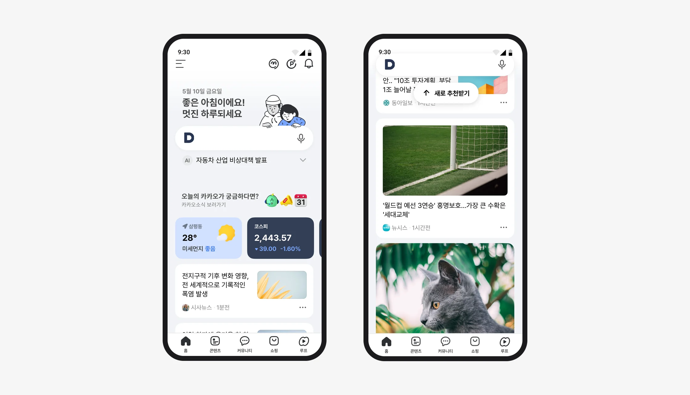
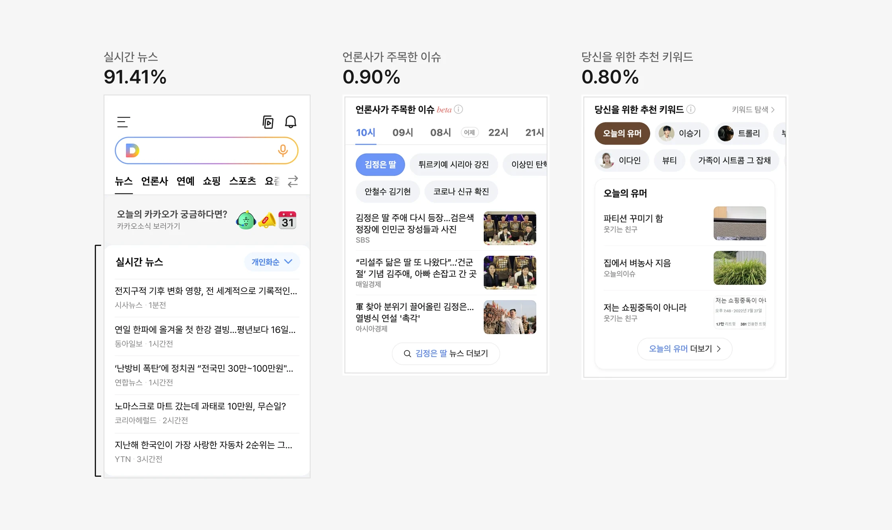
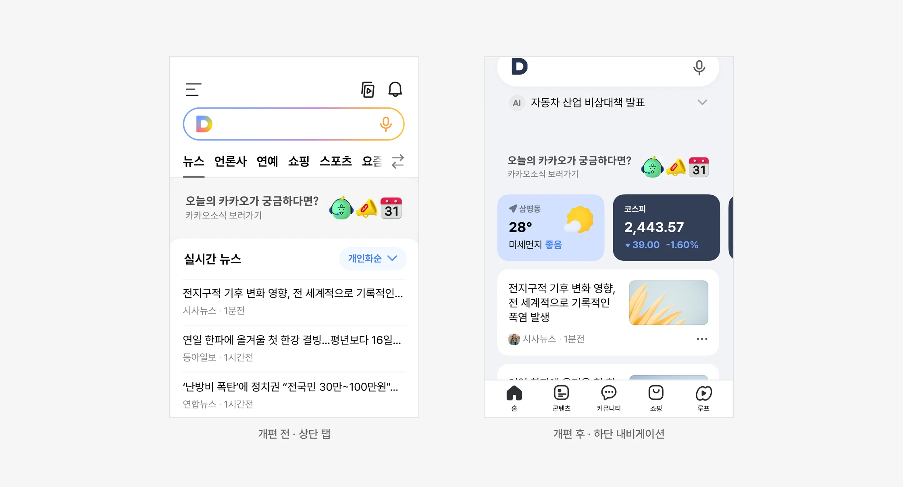
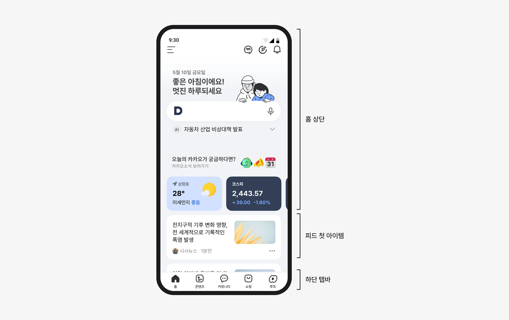
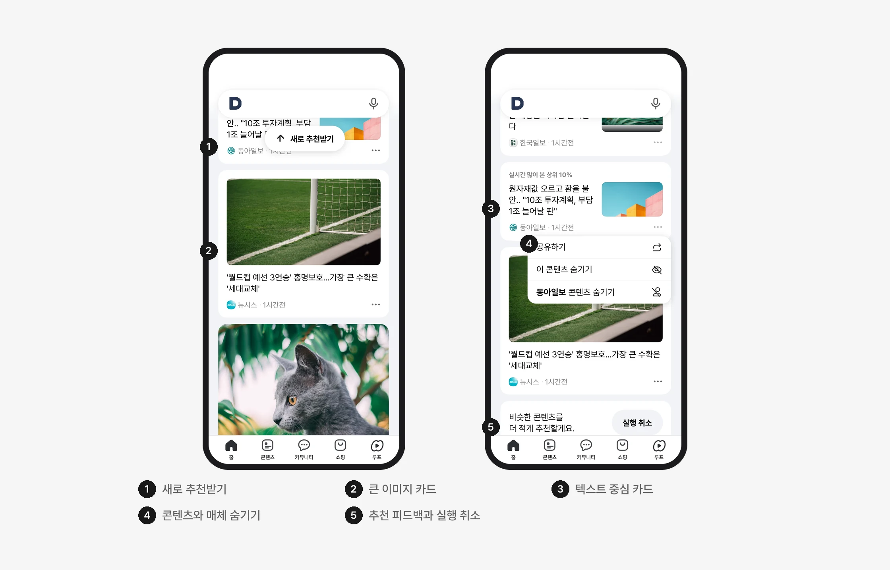
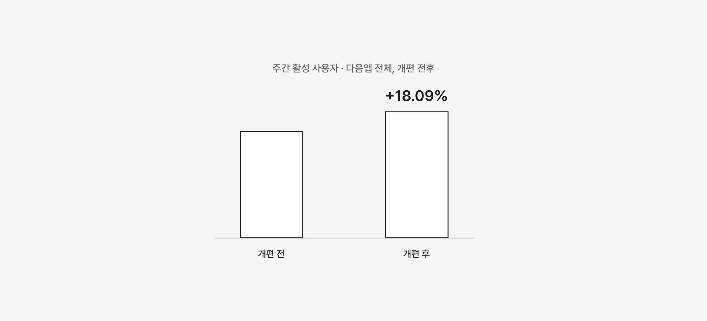

다음앱 전면 개편
기존 뉴스 이용을 유지하면서 다양한 콘텐츠와 서비스를 담기 위해 앱 구조를 개편했습니다.

출발점
실시간 뉴스에 클릭이 집중됐고, 아래의 추천 콘텐츠는 클릭 비중이 낮았습니다
개편 전 뉴스탭 전체 클릭 중 각 슬롯이 차지한 비중입니다. 실시간 뉴스가 91.41%였고, 그 아래의 언론사가 주목한 이슈와 당신을 위한 추천 키워드는 각각 1%에 못 미쳤습니다.

배경
하단 내비게이션을 중심으로 앱의 전체 구조를 재설계했습니다
상단에 이용이 집중되는 패턴이 오랫동안 이어졌고, 기존 구조의 한계도 누적됐습니다. 다음앱의 다음 단계를 위한 첫걸음으로, 하단 내비게이션을 중심으로 앱의 주요 영역을 다시 구성했습니다.
홈에는 검색·생활 정보와 통합피드를 함께 구성했습니다. 저는 새 구조 안에서 홈 탭과 피드의 디자인을 담당했습니다.

홈
첫 화면 안에 피드의 시작을 드러냈습니다
홈 상단에서 아래의 콘텐츠 탐색으로 이어지도록, 첫 화면에 통합피드의 첫 아이템을 보여주는 방식을 제안했습니다.
이 배치는 2025년 1월 출시 버전에 반영됐습니다.

피드
콘텐츠를 읽고, 다음 추천을 조절하는 피드
텍스트 중심 카드와 큰 이미지 카드로 콘텐츠의 성격을 구분했습니다.
원치 않는 콘텐츠나 매체를 숨기고, 새로 추천받을 수 있는 기능을 피드 안에 함께 구성했습니다.

결과
개편 이후, 사용자 활성도의 변화를 확인했습니다
다음앱 전면 개편 이후 주간 활성 사용자 수가 18.09% 증가한 것으로 기존 결과 자료에 기록되어 있습니다.
이는 홈·피드를 포함한 전체 개편 프로젝트의 결과로, 개별 디자인 영역의 효과와는 구분해 해석해야 합니다.
회고
홈은 콘텐츠의 종착지가 아니라, 서비스 탐색의 출발점이어야 한다고 생각했습니다
이번 개편에서는 더 많은 정보를 보여주는 것보다 사용자가 다음 행동을 발견하고 선택할 수 있는 구조를 만드는 데 집중했습니다.
역할
담당한 것
- 홈 탭 디자인
- 통합피드 디자인
- 첫 화면의 피드 첫 아이템 노출 제안
함께 한 것
- 하단 내비게이션 중심의 앱 구조 전환 — 다음앱 개편 팀
- 개편 이후 활성도 — 전체 프로젝트의 결과